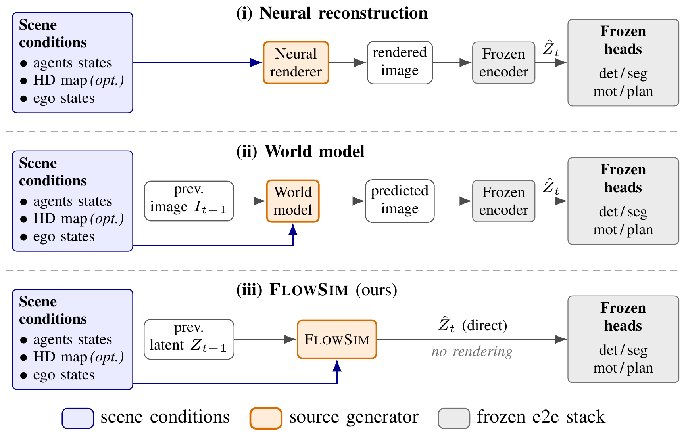
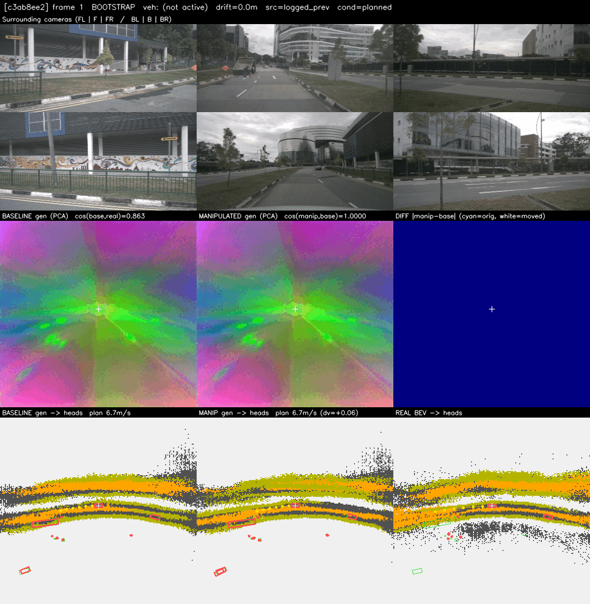
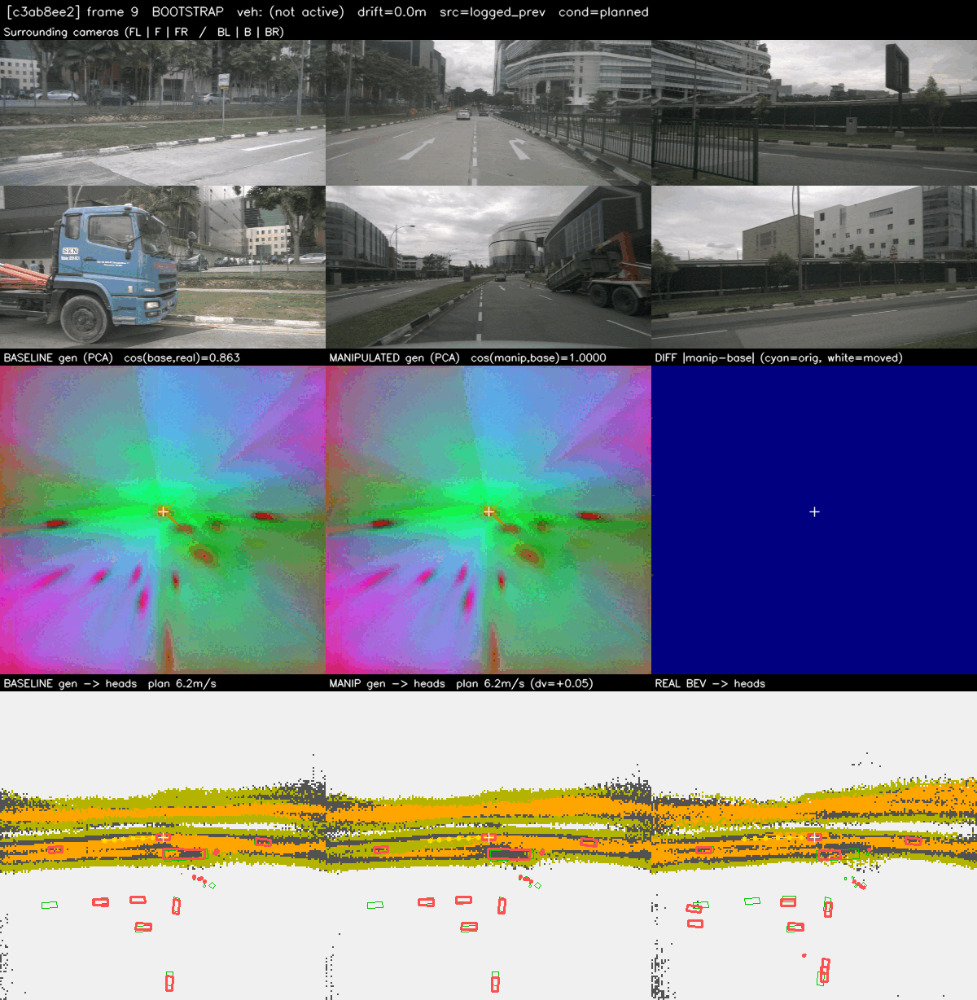
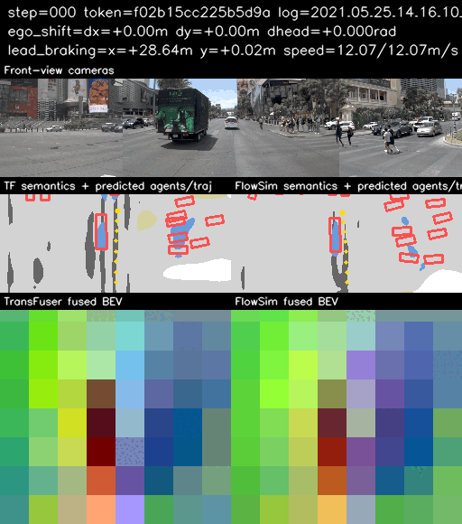
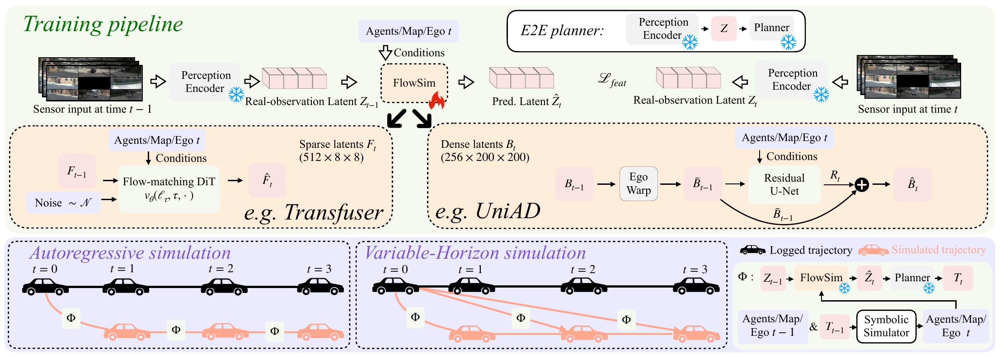
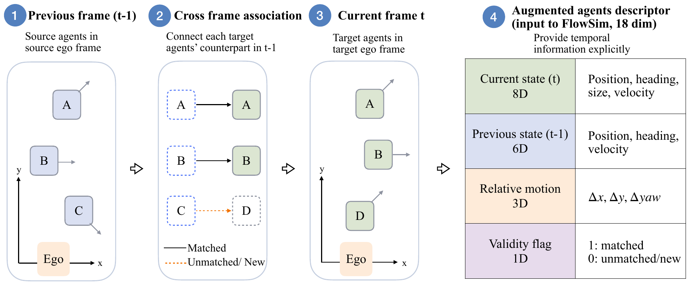
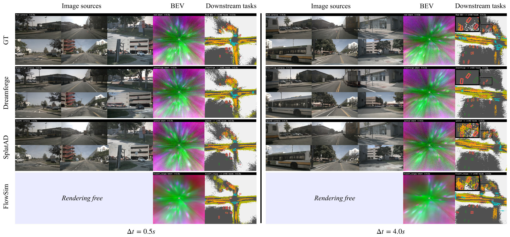
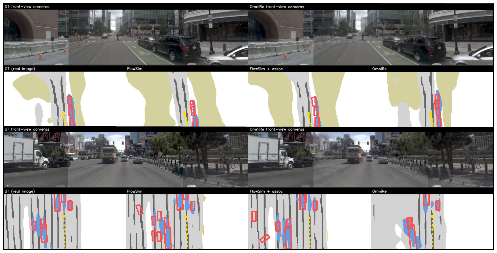
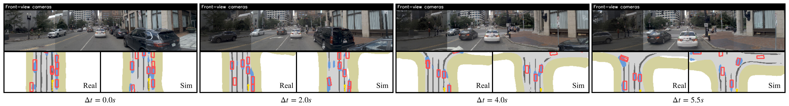

Abstract
Closed-loop evaluation of end-to-end (E2E) driving systems typically relies on generating sensor observations and re-processing them through the perception encoder, introducing substantial computational cost and a sim2real gap between simulated and real sensor observations. In this paper, we ask a more fundamental question: is image-space simulation necessary for closed-loop evaluation of E2E driving systems? We propose FlowSim, a rendering-free simulation paradigm that predicts the internal latent representation directly from a previous latent and target-frame symbolic scene conditions. The predicted latent is then processed by the original frozen downstream modules, eliminating image rendering and perception re-encoding. Explicit cross-frame agent association improves latent transition prediction and rollout stability, while variable-horizon simulation enables long-horizon simulation from a common real anchor without accumulating intermediate rollout errors.
Experiments on nuScenes and NavSim demonstrate that FlowSim preserves downstream behavior competitively with, and often exceeds, image-space simulation in source-to-reference agreement across variable simulation horizons and both dense and sparse latent representations. By predicting the latent directly, both instantiations of FlowSim simulate each step in 0.04–0.06 s, substantially faster than the image-space simulation methods they are compared against.
Counterfactual Simulation Videos
Because FlowSim is driven by symbolic scene conditions, the scene can be edited and the frozen driving stack is evaluated on the resulting latent, without rendering a single image.



Method

Latent-simulation formulation
Ẑt = fθ(Zt−1, At, Mt, et)
At: surrounding agents, Mt: map context, et: ego-state change. The simulator fθ is the only trainable component; all downstream modules stay frozen. Training uses a simple latent reconstruction loss ℒ = ‖Ẑt − Zt‖1.
Variable-horizon simulation
Training pairs are sampled with multiple source–target intervals Δt. At evaluation, any supported horizon is predicted in a single step from the nearest real anchor, avoiding the compounding error of generated-to-generated autoregressive rollouts, while conditions can still be updated online between steps.
Associated dynamic-agent conditioning

Each target-frame agent sit is augmented with its source-frame correspondence, relative motion and a validity flag: ait = [sit, sit−1, Δsi, ci]. Temporal correspondence becomes an explicit conditioning signal instead of something the simulator must infer.
Qualitative Results



Quantitative Results
Dense latent: UniAD on nuScenes
Source-to-reference agreement with the frozen UniAD stack. ↑ higher is better, ↓ lower is better. Best per horizon in bold. † CPU offload due to insufficient VRAM on A100 (40 GB).
| Source | Δt | Detection | Map | Motion | Planning | Inference | |||||
|---|---|---|---|---|---|---|---|---|---|---|---|
| IoU↑ | cADE↓ | Lane↑ | Drive↑ | ADE↓ | FDE↓ | ADE↓ | FDE↓ | Time (s)↓ | VRAM (GB)↓ | ||
| SplatAD (gt hist.) | 0.5 s | 0.75 | 1.86 | 0.48 | 0.84 | 6.03 | 11.03 | 0.31 | 0.64 | 0.13 | 4.5 |
| DreamForge (gt hist.) | 0.65 | 2.32 | 0.48 | 0.85 | 6.35 | 11.57 | 0.30 | 0.61 | 92.3 | 38.2 | |
| Warp (Rt=0) | 0.57 | 1.89 | 0.46 | 0.82 | 5.87 | 10.72 | 0.62 | 1.14 | <0.01 | – | |
| FlowSim (VH, assoc.) | 0.68 | 1.69 | 0.48 | 0.86 | 5.96 | 10.88 | 0.53 | 0.97 | 0.04 | 3.0 | |
| SplatAD (gen. hist.) | 1.5 s | 0.55 | 4.65 | 0.35 | 0.73 | 8.13 | 14.87 | 0.61 | 1.19 | 0.13 | 4.5 |
| DreamForge (gen. hist.) | 0.38 | 6.17 | 0.27 | 0.69 | 8.92 | 16.29 | 0.99 | 2.08 | 267.8 | 40.0 | |
| Warp (Rt=0) | 0.37 | 3.94 | 0.34 | 0.69 | 7.70 | 13.95 | 1.35 | 2.41 | <0.01 | – | |
| FlowSim (VH, assoc.) | 0.58 | 1.99 | 0.43 | 0.82 | 7.09 | 12.86 | 0.61 | 1.14 | 0.04 | 3.0 | |
| SplatAD (gen. hist.) | 2.5 s | 0.55 | 4.65 | 0.35 | 0.73 | 8.13 | 14.87 | 0.61 | 1.19 | 0.13 | 4.5 |
| DreamForge (gen. hist.) | 0.38 | 5.91 | 0.26 | 0.67 | 8.99 | 16.41 | 0.97 | 2.03 | 401.5 | 25.8† | |
| Warp (Rt=0) | 0.31 | 5.33 | 0.27 | 0.61 | 8.04 | 14.53 | 2.03 | 3.61 | <0.01 | – | |
| FlowSim (VH, assoc.) | 0.56 | 2.12 | 0.40 | 0.81 | 7.24 | 13.14 | 0.60 | 1.13 | 0.04 | 3.0 | |
| SplatAD (gen. hist.) | 4.0 s | 0.55 | 4.65 | 0.35 | 0.73 | 8.13 | 14.87 | 0.61 | 1.19 | 0.13 | 4.5 |
| DreamForge (gen. hist.) | 0.36 | 6.16 | 0.24 | 0.65 | 8.83 | 16.11 | 0.99 | 2.07 | 726.0 | 25.8† | |
| Warp (Rt=0) | 0.24 | 6.81 | 0.21 | 0.52 | 8.17 | 14.75 | 2.77 | 4.88 | <0.01 | – | |
| FlowSim (VH, assoc.) | 0.55 | 2.18 | 0.38 | 0.79 | 7.44 | 13.50 | 0.66 | 1.23 | 0.04 | 3.0 | |
Sparse latent: TransFuser on NavSim navtest
Each step n is a 0.5 s keyframe (n=4 → 2.0 s). Bold marks the best FlowSim result per horizon. Time is the cumulative source-generation time to reach each horizon.
| Source | n | Segmentation | Detection | Planning | Inference | |||
|---|---|---|---|---|---|---|---|---|
| Pix.↑ | mIoU↑ | Box L2↓ | Head.↓ | ADE↓ | FDE↓ | Time (s)↓ | ||
| OmniRe | – | 0.77 | 0.42 | 5.78 | 0.84 | 0.61 | 1.60 | 0.45 |
| FlowSim (AR, no assoc.) | 1 | 0.89 | 0.64 | 2.36 | 0.48 | 0.44 | 1.17 | 0.06 |
| 2 | 0.86 | 0.59 | 2.67 | 0.58 | 0.59 | 1.56 | 0.12 | |
| 3 | 0.85 | 0.56 | 2.76 | 0.62 | 0.67 | 1.77 | 0.18 | |
| 4 | 0.85 | 0.55 | 2.76 | 0.62 | 0.71 | 1.89 | 0.24 | |
| FlowSim (AR, assoc.) | 1 | 0.89 | 0.65 | 2.36 | 0.43 | 0.38 | 1.00 | 0.06 |
| 2 | 0.87 | 0.60 | 2.73 | 0.53 | 0.49 | 1.31 | 0.12 | |
| 3 | 0.86 | 0.58 | 2.83 | 0.57 | 0.55 | 1.47 | 0.18 | |
| 4 | 0.85 | 0.56 | 2.84 | 0.60 | 0.58 | 1.56 | 0.23 | |
| FlowSim (VH, assoc.) | 1 | 0.88 | 0.62 | 2.51 | 0.49 | 0.49 | 1.31 | 0.06 |
| 2 | 0.88 | 0.62 | 2.57 | 0.50 | 0.50 | 1.35 | 0.06 | |
| 3 | 0.87 | 0.61 | 2.60 | 0.52 | 0.51 | 1.38 | 0.06 | |
| 4 | 0.87 | 0.60 | 2.66 | 0.53 | 0.52 | 1.40 | 0.06 | |
Key findings
- Latent beats image space at longer horizons. From 1.5 s to 4.0 s, FlowSim outperforms DreamForge on every metric; at 4.0 s detection IoU rises from 0.36 to 0.55 and planning ADE/FDE drops from 0.99/2.07 m to 0.66/1.23 m.
- Sparse latents too. On NavSim, FlowSim with agent association beats OmniRe on every metric (mIoU 0.42 → 0.65, planning ADE 0.61 → 0.38 m) at 0.06 s vs. 0.45 s per step.
- Variable-horizon avoids drift. On UniAD, AR planning FDE grows to 1.45 m at 4.0 s while VH stays at 1.23 m; on TransFuser, AR ADE grows 0.38 → 0.58 m over 4 steps while VH stays at 0.49 → 0.52 m.
- Agent association stabilizes rollouts. Without it, UniAD AR planning ADE/FDE at 4.0 s degrades from 0.77/1.45 m to 1.97/3.76 m.
BibTeX
@article{wu2026flowsim,
title = {FlowSim: Rendering-Free Closed-Loop Simulation for Evaluating End-to-End Driving Systems},
author = {Wu, Hanfeng and Marcos-Ramiro, Alvaro and Schmidt, Michael and Stiller, Christoph},
journal = {arXiv preprint arXiv:2610.18030},
year = {2026},
eprint = {2610.18030},
archivePrefix = {arXiv},
primaryClass = {cs.CV},
url = {https://arxiv.org/abs/2610.18030}
}